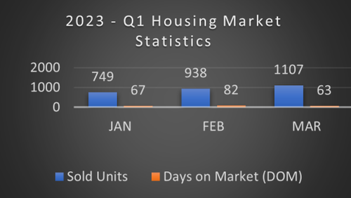
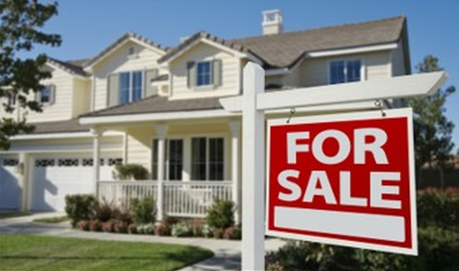
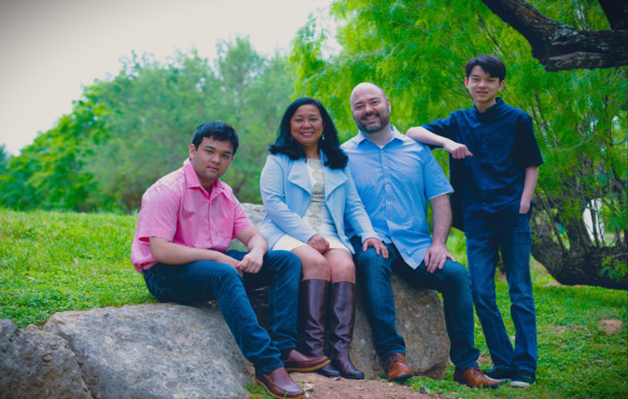

@ -14,7 +14,7 @@
        <div class="main-content" style="box-sizing: border-box;padding: 0;margin: 0;max-width: 1200px;">
            <div class="header"
                style="box-sizing: border-box;display: flex;flex-direction: row;flex-wrap: wrap;padding: 0px;min-height: 110px;max-width: 1500px;color: white;background-color: #2F5981;">
                
                <div class="details"
                    style="box-sizing: border-box;padding-left: 5px;padding-bottom: 20px;padding-top: 6px;flex-grow: 1;">
@ -47,16 +47,16 @@
                </div>
                <a target="_blank" href="https://ann-lahpaijones.kw.com/"
                    style="box-sizing: border-box;color: white;text-decoration: none;"></a>
            </div>
            <div class="row" style="box-sizing: border-box;display: flex;flex-wrap: wrap;">
            <div class="row" style="box-sizing: border-box;display: flex; flex-wrap: wrap;">
                <div class="column"
                    style="box-sizing: border-box;background-color: #D0CECE;flex: 50%;padding: 10px 10px 0px 10px;">
                    <div class="article" style="box-sizing: border-box;padding-bottom: 10px;">
                        <h2 style="box-sizing: border-box;font-size: 1.0em;font-weight: bold;">What’s happening in
                            Austin, Travis County Housing Market?</h2>
                        
                        <p style="box-sizing: border-box;font-size: 0.9em;padding-left: 5px;">
                            Austin's market is trending towards a sweet spot, inventory is up, and prices are
@ -67,7 +67,7 @@
                            home compared to last year. Buyers continue to gain more options and negotiation power,
                            while sellers have more time to make their next move.
                        </p>
                        
                        <p style="box-sizing: border-box;font-size: 0.9em;padding-left: 5px;">
                            It is critical for you to work with a local REALTOR® who can provide a detailed analysis of
@ -76,14 +76,14 @@
                        </p>
                    </div>
                    <div class="article" style="box-sizing: border-box;padding-bottom: 10px;">
                        
                    </div>
                </div>
                <div class="column"
                    style="box-sizing: border-box;background-color: #D0CECE;flex: 50%;padding: 10px 10px 0px 10px;">
                    <div class="article" style="box-sizing: border-box;padding-bottom: 10px;">
                        
                        <a target="_blank" class="title"
                            href="https://www.nar.realtor/blogs/styled-staged-sold/study-staging-paramount-as-homes-begin-to-linger?utm_term=BC8C1870-BA4A-4EE6-BC98-1A864446F251"
@ -131,7 +131,7 @@
                        </ul>
                    </div>
                    <div class="article" style="box-sizing: border-box;padding-bottom: 10px;">
                        
                    </div>
                </div>
@ -147,7 +147,7 @@
                            try it out for two years, but we quickly fell in love with beautiful Austin. The rest is
                            history!
                        </p>
                        
                        
                        <p style="box-sizing: border-box;font-size: 0.9em;padding-left: 5px;">
                            Austin is the city I've lived in for the longest time in my entire life, and the city where
                            I raised my two sons. It is crazy how much and how quickly this city has grown right in
@ -165,7 +165,7 @@
                            Sincerely,
                        </p>
                        <div class="signature-container" style="box-sizing: border-box;">
                            
                        </div>
                    </div>
